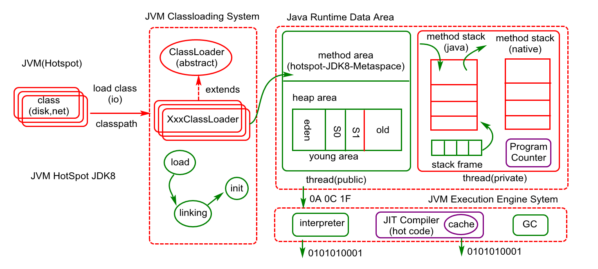
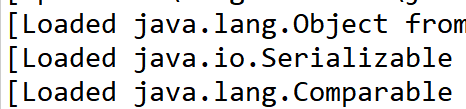

原文连接:https://www.cnblogs.com/shi-zhe/p/11574438.html
一、JVM概述
JVM (JAVA 虚拟机),定义了一套编译,加载,解释执行JAVA代码的规范,
基于这套规范市场上不同产品实现,例如Hotspot,JRockit,J9等.
其简易内存体系结构如下:

二、堆的内存划分：

Java堆的内存划分如图所示，分别为年轻代、Old Memory（老年代）、Perm（永久代）。其中在Jdk1.8中，永久代被移除，使用MetaSpace代替。
1、新生代：
（1）使用复制清除算法（Copinng算法），原因是年轻代每次GC都要回收大部分对象。新生代里面分成一份较大的Eden空间和两份较小的Survivor空间。每次只使用Eden和其中一块Survivor空间，然后垃圾回收的时候，把存活对象放到未使用的Survivor（划分出from、to）空间中，清空Eden和刚才使用过的Survivor空间。
（2）分为Eden、Survivor From、Survivor To，比例默认为8：1：1
（3）内存不足时发生Minor GC
2、老年代：
（1）采用标记-整理算法（mark-compact），原因是老年代每次GC只会回收少部分对象。
3、Perm：用来存储类的元数据，也就是方法区。
（1）Perm的废除：在jdk1.8中，Perm被替换成MetaSpace，MetaSpace存放在本地内存中。原因是永久代进场内存不够用，或者发生内存泄漏。
（2）MetaSpace（元空间）：元空间的本质和永久代类似，都是对JVM规范中方法区的实现。不过元空间与永久代之间最大的区别在于：元空间并不在虚拟机中，而是使用本地内存。
三、GC垃圾回收：
常见的垃圾回收算法：
1、Mark-Sweep（标记-清除算法）：
（1）思想：标记清除算法分为两个阶段，标记阶段和清除阶段。标记阶段任务是标记出所有需要回收的对象，清除阶段就是清除被标记对象的空间。
（2）优缺点：实现简单，容易产生内存碎片
2、Copying（复制清除算法）：
（1）思想：将可用内存划分为大小相等的两块，每次只使用其中的一块。当进行垃圾回收的时候了，把其中存活对象全部复制到另外一块中，然后把已使用的内存空间一次清空掉。
（2）优缺点：不容易产生内存碎片；可用内存空间少；存活对象多的话，效率低下。
3、Mark-Compact（标记-整理算法）：
（1）思想：先标记存活对象，然后把存活对象向一边移动，然后清理掉端边界以外的内存。
（2）优缺点：不容易产生内存碎片；内存利用率高；存活对象多并且分散的时候，移动次数多，效率低下
4、分代收集算法：（目前大部分JVM的垃圾收集器所采用的算法）：
思想：把堆分成新生代和老年代。（永久代指的是方法区） （1） 因为新生代每次垃圾回收都要回收大部分对象，所以新生代采用Copying算法。新生代里面分成一份较大的Eden空间和两份较小的Survivor空间。每次只使用Eden和其中一块Survivor空间，然后垃圾回收的时候，把存活对象放到未使用的Survivor（划分出from、to）空间中，清空Eden和刚才使用过的Survivor空间。
（2） 由于老年代每次只回收少量的对象，因此采用mark-compact算法。
（3） 在堆区外有一个永久代。对永久代的回收主要是无效的类和常量。
几种不同的垃圾回收类型：
（1）Minor GC：从年轻代（包括Eden、Survivor区）回收内存。
（2）Major GC：清理整个老年代，当eden区内存不足时触发。
（3）Full GC：清理整个堆空间，包括年轻代和老年代。当老年代内存不足时触发。
四、JVM优化
1、一般来说，当survivor区不够大或者占用量达到50%，就会把一些对象放到老年区。通过设置合理的eden区，survivor区及使用率，可以将年轻对象保存在年轻代，从而避免full GC，使用-Xmn设置年轻代的大小
2、对于占用内存比较多的大对象，一般会选择在老年代分配内存。如果在年轻代给大对象分配内存，年轻代内存不够了，就要在eden区移动大量对象到老年代，然后这些移动的对象可能很快消亡，因此导致full GC。通过设置参数：-XX:PetenureSizeThreshold=1000000，单位为B，标明对象大小超过1M时，在老年代(tenured)分配内存空间。
3、一般情况下，年轻对象放在eden区，当第一次GC后，如果对象还存活，放到survivor区，此后，每GC一次，年龄增加1，当对象的年龄达到阈值，就被放到tenured老年区。这个阈值可以同构-XX:MaxTenuringThreshold设置。如果想让对象留在年轻代，可以设置比较大的阈值。
4、设置最小堆和最大堆：-Xmx和-Xms稳定的堆大小堆垃圾回收是有利的，获得一个稳定的堆大小的方法是设置-Xms和-Xmx的值一样，即最大堆和最小堆一样，如果这样子设置，系统在运行时堆大小理论上是恒定的，稳定的堆空间可以减少GC次数，因此，很多服务端都会将这两个参数设置为一样的数值。稳定的堆大小虽然减少GC次数，但是增加每次GC的时间，因为每次GC要把堆的大小维持在一个区间内。
5、一个不稳定的堆并非毫无用处。在系统不需要使用大内存的时候，压缩堆空间，使得GC每次应对一个较小的堆空间，加快单次GC次数。基于这种考虑，JVM提供两个参数，用于压缩和扩展堆空间。
（1）-XX:MinHeapFreeRatio 参数用于设置堆空间的最小空闲比率。默认值是40，当堆空间的空闲内存比率小于40，JVM便会扩展堆空间
（2）-XX:MaxHeapFreeRatio 参数用于设置堆空间的最大空闲比率。默认值是70， 当堆空间的空闲内存比率大于70，JVM便会压缩堆空间。
（3）当-Xmx和-Xmx相等时，上面两个参数无效
6、通过增大吞吐量提高系统性能，可以通过设置并行垃圾回收收集器。
（1）-XX:+UseParallelGC:年轻代使用并行垃圾回收收集器。这是一个关注吞吐量的收集器，可以尽可能的减少垃圾回收时间。
（2）-XX:+UseParallelOldGC:设置老年代使用并行垃圾回收收集器。
7、尝试使用大的内存分页：使用大的内存分页增加CPU的内存寻址能力，从而系统的性能。-XX:+LargePageSizeInBytes 设置内存页的大小
8、使用非占用的垃圾收集器。-XX:+UseConcMarkSweepGC老年代使用CMS收集器降低停顿。
9、-XXSurvivorRatio=3，表示年轻代中的分配比率：survivor:eden = 2:3
10、JVM性能调优的工具：
（1）jps（Java Process Status）：输出JVM中运行的进程状态信息(现在一般使用jconsole)
（2）jstack：查看java进程内线程的堆栈信息。
（3）jmap：用于生成堆转存快照
（4）jhat：用于分析jmap生成的堆转存快照（一般不推荐使用，而是使用Ecplise Memory Analyzer）
（3）jstat：是JVM统计监测工具。可以用来显示垃圾回收信息、类加载信息、新生代统计信息等。
（4）VisualVM：故障处理工具
五、类加载机制
1、可以在elipse类中右键Run configurations-->Arguments-->VM Arguments中设置参数:
-XX:+TraceClassLoading ----查看类的加载顺序
-XX:MetaspaceSize=2m ----设置metaspace的大小
-XX:MaxMetaspaceSize=10m ----设置metaspace大小的最大值
2、每一个类的最先加载的三个类

3、类加载器把class文件中的二进制数据读入到内存中，存放在方法区，然后在堆区创建一个java.lang.Class对象，用来封装类在方法区内的数据结构。类加载的步骤如下：
加载：查找并加载类的二进制数据（把class文件里面的信息加载到内存里面）
连接：把内存中类的二进制数据合并到虚拟机的运行时环境中
（1）验证：确保被加载的类的正确性。包括：
A、类文件的结构检查：检查是否满足Java类文件的固定格式
B、语义检查：确保类本身符合Java的语法规范
C、字节码验证：确保字节码流可以被Java虚拟机安全的执行。字节码流是操作码组成的序列。每一个操作码后面都会跟着一个或者多个操作数。字节码检查这个步骤会检查每一个操作码是否合法。
D、二进制兼容性验证：确保相互引用的类之间是协调一致的。 （2）准备：为类的静态变量分配内存，并将其初始化为默认值
（3）解析：把类中的符号引用转化为直接引用（比如说方法的符号引用，是有方法名和相关描述符组成，在解析阶段，JVM把符号引用替换成一个指针，这个指针就是直接引用，它指向该类的该方法在方法区中的内存位置）
初始化：为类的静态变量赋予正确的初始值。当静态变量的等号右边的值是一个常量表达式时，不会调用static代码块进行初始化。只有等号右边的值是一个运行时运算出来的值，才会调用static初始化。
4、常见的三种类加载器：
AppClassLoader--应用类加载器，负责加载我们自己写的类
ExtClassLoader--扩展类加载器，负责加载扩展包（jre\lib\ext\*.jar）
BootstrapClassLoader--根类加载器，负责加载核心包（jre\lib\rt.jar）
5、类加载类的两种方式----显式加载和隐式加载
（1）显式加载
1 class classA{
2 //类加载时可以执行静态代码块,但不一定会执行
3 static {
4 System.out.println(11);
5 }
6 }
7
8 //不会执行静态代码块
9 loader.loadClass("cn.shizhe.ClassLoader.classA");
10 //会执行静态代码块
11 Class.forName("cn.shizhe.ClassLoader.classA",true,loader);
12 //不会执行静态代码块
13 Class.forName("cn.shizhe.ClassLoader.classA",false,loader);（2）隐式加载的时机：--默认都会进行初始化
访问类的静态属性时?(分情况)
访问static final修饰的八种基本数据类型和字符串时不会触发类的加载
访问static 修饰的任意属性时都会触发类的加载
访问类的静态方法
构建类的对象时
6、类的被动加载与主动加载
1 class class1{
2 static int a = 100;
3 static {
4 System.out.println("class1.static");
5 }
6 }
7
8 class class2 extends class1{
9 static {
10 System.out.println("class2.static");
11 }
12 }
13 public class TestClassObject08 {
14 public static void main(String[] args) {
15 //class1为主动加载,class2为被动加载(不执行static初始化操作)
16 System.out.println(class2.a);
17 }
18 }